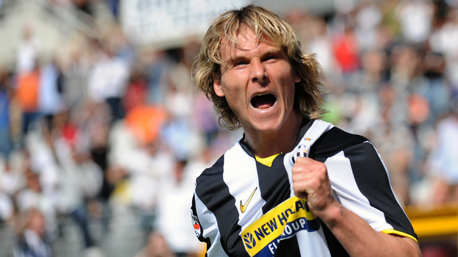

Pavel Nedvěd ; ur. 30 sierpnia 1972 w Chebie) – czeski piłkarz który występował na pozycji pomocnika. Wicemistrz Europy 1996. Uczestnik mistrzostw świata 2006, mistrzostw Europy 2000 i 2004. W swojej karierze występował m.in. w Dukli Praga, Sparta Praga, S.S. Lazio i Juventus F.C. Uznawany za jednego z najlepszych piłkarzy w historii czeskiej piłki nożnej.